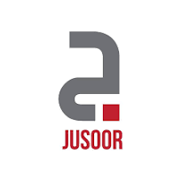

Student Mentor at TUM CIT-Informatics MINGA Mentoring Program
October 2023 - January 2024
- Mentored a first-semester M.Sc. Informatics student through the TUM MINGA Mentoring Program, providing structured guidance on course selection, specialization pathways, and study planning.
- Advised on aligning academic choices with long-term career goals in areas such as software engineering, data science, AI, and systems engineering.

Academic Mentor with Syrian Youth Empowerment
May 2022 - Present
I am currently working with the Syrian Youth Empowerment (SYE) in their graduate program as an academic mentor. SYE assists students in standardized exams (GRE, TOEFL, IELTS...), improving the personal statement and CV, in addition to providing financial support for the students.My current roles are reviewing the students' applications for SYE Graduate Program in addition to choosing potential candidates and interviewing them. After selecting some students for the SYE Grad Program, I was paired with four mentees for the 2022-2023 cohort and two mentees for the 2023-2024 cohort in order to assist them in the graduate school application process. Moreover, I organized multiple webinars to guide the students in applying to DAAD scholarship.
My mentees were able to get the following opportunities:
2022-2023 cohort:
- Two DAAD scholarships to pursue a master's degree in Germany.
- Three PhD offers at Rice University, Bristol University, and Penn State University.
- One Said scholarship to pursue a master's degree at Cambridge University.
- A full scholarship to pursue a master's degree at the University of Calgary.
- Eiffel scholarship to pursue a master's degree in France.

Acadmeic Advisor with Jusoor
May 2022 - November 2023
I mentored two Syrian refugee students in Lebanon and Iraq to apply for scholarships to pursue further studies. My roles are holding weekly meetings with the mentees as well as reviewing their application essays and providing suggestions to improve them. I also organized multiple webinars in order to assist the students in the application process for DAAD and Erasmus scholarships.